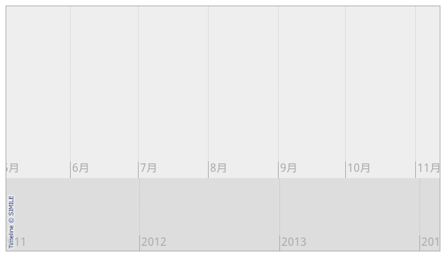
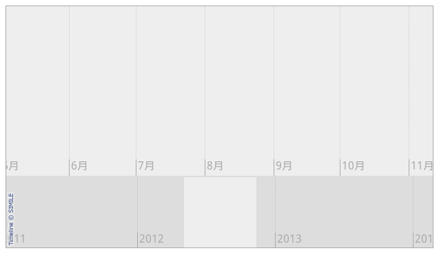
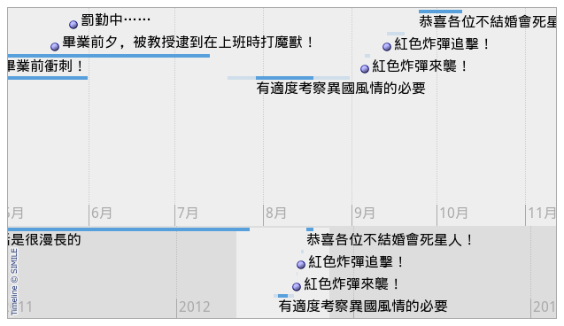
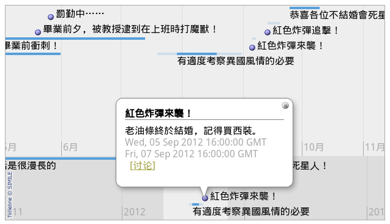
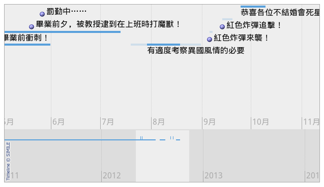

Simile Widget Timeline - 用靜態網頁表現時間線

簡介
Timeline 可讓網頁建立者在靜態網頁上，顯示複雜的時間線示意圖。
Timeline 是 MIT "SIMILE Project" 釋出的一項開源作品。該計劃提供了一些結構精美的網路小程式 (widget) 供人自由運用，而 Timeline 元件就是這其中之一。
要使用它，您得懂一些基本的 html 與程式設計邏輯才行－很基本的就行。其他的，我會一步一步地示範給您看的。
安裝說明
本軟體不用安裝，請打開您的文字編輯器，直接在網頁上建立時間線吧。
快速開始
官網提供了簡單易懂的快速開始導覽（見：https://code.google.com/p/simile-widgets/wiki/Timeline_GettingStarted），本文是以我自己理解並實驗的方式來進行解說。建立基礎面板
首先，您必須擁有一個標準的 .html 檔案，這檔案就是要秀出您時間線的檔案。若您原本沒有現存的 html 檔，您可以先建立一個空白的來玩玩。
一個標準的 HTML5 空白頁面，內容會像是這樣……
1 ＜!DOCTYPE html＞ 2 ＜html＞ 3 ＜head＞ 4 ＜meta charset="UTF-8" /＞ 5 ＜/head＞ 6 ＜body＞ 7 ＜/body＞ 8 ＜/html＞
有了網頁，我們這才能夠開始在網頁中載入 Timeline 的 API。
請在 ＜head＞ 區段中塞入以下程式碼：
＜script src="https://static.simile.mit.edu/timeline/api-2.3.0/timeline-api.js?bundle=true" type="text/javascript"＞＜/script＞
網頁將會變成：
1 ＜!DOCTYPE html> 2 ＜html> 3 ＜head> 4 ＜meta charset="UTF-8" /> 5 ＜!-- 就這行 --＞＜script src="https://static.simile.mit.edu/timeline/api-2.3.0/timeline-api.js?bundle=true" type="text/javascript"＞＜script＞ 6 ＜/head＞ 7 ＜body＞ 8 ＜/body＞ 9 ＜/html＞
這邊載入的是 2.3.0 版本的 API。Timeline 還有 2.3.1 版本的 API 可用，不過既然官網教學示範中是採用 2.3.0 版本，筆者這邊也索性乖乖照辦了。有興趣嘗鮮的人，可以把路徑改一改，試試新版 API 有什麼好處。
API 準備完畢後，就將時間線欄位塞入網頁中。
請將以下的程式碼放入 ＜body＞ 中，就放入到您想插入 Timeline 的地方。
1 ＜div id="my-timeline" style="height: 350px; border: 1px solid #aaa"＞＜/div＞ 2 ＜noscript＞ 3 This page uses Javascript to show you a Timeline. Please enable Javascript in your browser to see the full page. Thank you. 4 ＜/noscript＞
＜div＞ 是一個欄位，我們等會兒會用 Timeline 填充它，唯一需要注意的是：id 必須和 API 指定的目標對象一致（目前還沒指定）。至於 Timeline 的大小，可直接用 html 與 CSS 語句加以調整。
如果使用者的瀏覽器不允許 Javascript 執行， ＜noscript＞ 內的東西會顯示出來，好提醒讀者修改瀏覽器的設定。
終於要運用 API 了！請自行在 ＜body＞ 中找地方加入以下程式碼（用 ＜script＞ 標籤括起來），或是運用外部 .js 檔案來運行。
1 var tl;
2 function onLoad() {
3 var bandInfos = [
4 Timeline.createBandInfo({
5 width: "70%",
6 intervalUnit: Timeline.DateTime.MONTH,
7 intervalPixels: 100
8 }),
9 Timeline.createBandInfo({
10 width: "30%",
11 intervalUnit: Timeline.DateTime.YEAR,
12 intervalPixels: 200
13 })
14 ];
15 tl = Timeline.create(document.getElementById("my-timeline"), bandInfos);
16 }
17
18 var resizeTimerID = null;
19 function onResize() {
20 if (resizeTimerID == null) {
21 resizeTimerID = window.setTimeout(function() {
22 resizeTimerID = null;
23 tl.layout();
24 }, 500);
25 }
26 }
注意 tl = Timeline.create() 那行，id 必須要和先前準備好的欄位 id 相同。
參看上方 onLoad() 中的設定，這部份可讓我們在先前預備的 ＜div＞ 中加入兩個「時間線」元素。（以 javascript 的角度來說，那兩個時間線的基礎設定資料，被存放在名叫 bandInfos 的容器中）。
bandInfos 中定義了兩條時間線的資料。其中，intervalPixels 表示每個格子的寬度，至於 intervalUnit 則表示了格子的單位。如果您不懂此處說的「格子」是什麼意思，請看看待會兒的截圖，您一定會馬上理解的。
在 Timeline.createBandInfo() 中，還有更多設定可以調整，想進一步了解請看 Timeline 的官方文件：https://code.google.com/p/simile-widgets/wiki/Timeline_TimelineClass。
繼續吧。
上面固然做了設定，但 onLoad() 其實還沒執行。請把 onLoad() 和 onResize() 兩個函式作為事件掛到 ＜body＞ 上面，讓他們跑起來：
1 ＜!-- 將 ＜body＞ 修改為以下的樣子： --＞ 2 ＜body onload="onLoad();" onresize="onResize();"＞
現在您可以把 html 放入瀏覽器觀察看看，應該已經能顯示出兩條時間條了。

▲ 圖1：兩條時間帶您大可用滑鼠拉拉看這兩條時間帶，您會發現它們是彼此獨立的，這不對。應該要讓他們關聯起來：
1 //在 bandInfos = [...] 下面加入這兩行 2 bandInfos[1].syncWith = 0; 3 bandInfos[1].highlight = true;
bandInfos[1].syncWith = 0 意味著從第二個元素同步往第一個元素，您若反過來指定 bandInfos[0].syncWith = 1 也可以將時間帶連上。不過為了讓 highlight 功能正確運作，要從大單位（如年）的時間帶連向小單位（如：月）的時間帶，而不要反過來。
再回去看瀏覽器，底下果然出現了 highlight 的部份。拉拉看上下兩個時間條，也會同步滑動了。
效果挺好的不是嗎？

▲ 圖2：連結後的時間帶。效果要拖拉才能看出，圖上只能看到 highlight 的效果。
加入事件
緞帶已經綁好了，不過上面還是一片空白。我們應該給它一點裝飾品。
修改 onLoad()，讓緞帶加入事件來源。
1 function onLoad() {
2 //新增下面這行
3 var eventSource = new Timeline.DefaultEventSource();
4 var bandInfos = [
5 Timeline.createBandInfo({
6 //新增下面這行
7 eventSource: eventSource,
8 width: "70%",
9 intervalUnit: Timeline.DateTime.MONTH,
10 intervalPixels: 100
11 }),
12 Timeline.createBandInfo({
13 //新增下面這行
14 eventSource: eventSource,
15 width: "30%",
16 intervalUnit: Timeline.DateTime.YEAR,
17 intervalPixels: 200
18 })
19 ];
20 bandInfos[1].syncWith = 0;
21 bandInfos[1].highlight = true;
22
23 tl = Timeline.create(document.getElementById("my-timeline"), bandInfos);
24 //新增下面這行
25 Timeline.loadXML("example1.xml", function(xml, url) { eventSource.loadXML(xml, url); });
26 }
上圖中總共增加了四行，來設定事件資料來源。
從最上面開始，先用 Timeline.DefaultEventSource() 創建事件來源物件，然後將事件來源物件指派給時間帶，最後去將實體資料與事件來源物件關聯起來，將來源繫結到 xml 檔案上。
程式碼的部份，這麼做就可以了。然而目前我們還沒有編寫任何 xml，所以暫時還沒能看到變化。
xml 怎麼寫？雪凡在這邊提供了一個範例：
1 4 5 ＜event 6 start="2012-5-27" 7 title="罰勤中……"＞ 8 ＜/event> 9 10 ＜event 11 start="2012-9-6" 12 end="2012-9-8" 13 title="紅色炸彈來襲！"＞ 14 老油條終於結婚，記得買西裝。 15 ＜/event＞ 16 17 ＜event 18 start="2012-5-2" 19 end="2012-7-14" 20 isDuration="true" 21 title="畢業前衝刺！"＞ 22 ＜/event＞ 23 24 ＜event 25 start="2012-7-20" 26 latestStart="2012-7-30" 27 earliestEnd="2012-8-19" 28 end="2012-9-1" 29 durationEvent="true" 30 title="有適度考察異國風情的必要"＞ 31 ＜/event＞ 32 33 ＜/data＞
修改好後刷新瀏覽器，您應該能看到類似於下方的介面：

▲ 圖3：加入事件後的時間帶。
小心 Same origin policy如果您在本機路徑中，運行上述的程式碼（瀏覽器路徑會顯示 file:///...），您可能無法得出正確結果。這是因為基於某些安全考量，javascript 不允許本地程式存取其他檔案，所以您將無法載入 .xml。無論如何，您得把這些資料與程式，全部丟上網頁伺服器，才能讓它們乖乖工作。
搭網頁伺服器很麻煩。若您手邊沒有現成的伺服器可供測試，您也可以打開終端機，用 python 產生一個臨時的伺服器：
1 # 開啟 shell 在程式碼目錄中，「擇一」使用以下指令 2 python3 -m http.server 8000 # 使用 python 3.x 搭建簡易伺服器 3 python -m SimpleHTTPServer # 使用 python 2.x 版本也行
鍵入指令後，您就可以用像 https://127.0.0.1:8000/example.html 的格式，來（在網頁瀏覽器中）打開剛剛的 html 檔案。如果您對本主題有興趣，請參看英文維基百科的說明頁。
這就解說一下，上面寫的 xml 是怎麼回事：
xml的 ＜data＞ 標籤中有兩個參數： wiki-url 與 wiki-section。這兩個參數是用來指定「討論維基」用的。
在 Timeline 中，每個「事件 (Event)」都會自動產生相對應的討論連結，而討論連結的格式為：「wiki-url + wiki-section + event title」
在上面的例子中，假設使用者點擊了「紅色炸彈來襲！」的討論按鈕，該使用者就會被帶往 https://xxx.sinica.edu.tw/wiki/whiteboard/紅色炸彈來襲！這個位置。
如此一來，要怎麼設定那兩個參數很清楚了。當然如果您沒有 wiki 那就不用理它。

▲ 圖4：點擊時間條上的項目會出現對話框，裡面有前往討論頁面的連結可按。
其他方面，您可用 title 決定要顯示什麼文字、用 start 設定開始時間、用 end 設定結束時間、用 isDuration（或 durationEvent）來標誌這是一個時間段事件，此外，還可以在
到此，所有必備的東西都設定完成。接下來是美容時間。
畫面調整
onLoad() 中還有些東西可以加入：
1 var bandInfos = [
2 Timeline.createBandInfo({
3 eventSource: eventSource,
4 width: "70%",
5 date: "Jun 28 2012 00:00:00 GMT", // 注意這行
6 intervalUnit: Timeline.DateTime.MONTH,
7 intervalPixels: 100
8 }),
9 Timeline.createBandInfo({
10 eventSource: eventSource,
11 width: "30%",
12 date: "Jun 28 2012 00:00:00 GMT", // 注意這行
13 overview: true, // 注意這行
14 intervalUnit: Timeline.DateTime.YEAR,
15 intervalPixels: 200
16 })
17 ];
date 允許您指定「載入時要將時間滑到哪個位置」；至於 overview 則可讓時間條變成概覽畫面。概覽畫面的意思是說：所有文字都會消去，只留下時間段示意圖的意思……請看下圖的範例：

▲ 圖5：將下方的時間條設成 overview，效果很明顯。
有了以上的知識，基本的 Timeline 運用就沒問題了。
深入閱讀
筆者找不到本軟體的 API 參考手冊，只有一拖拉庫的 How-To 文件。雖然 How-To 文件沒什麼不好呀，但深入鑽研時總有些苦手……
不管怎麼說，推荐清單還是列出來了，請看：
- 快速開始：https://code.google.com/p/simile-widgets/wiki/Timeline_GettingStarted。本文就是參考這份快速開始文件撰寫的。
- 官方文件清單：https://code.google.com/p/simile-widgets/w/list。官方文件的索引頁 (index page) 不好用，要找東西直接挖清單比較快。另外也請愛用頁面上的搜索條。
- Timeline 類別的 API 介紹：https://code.google.com/p/simile-widgets/wiki/Timeline_TimelineClass。
- Event 的可能參數一覽：https://code.google.com/p/simile-widgets/wiki/Timeline_EventSources。